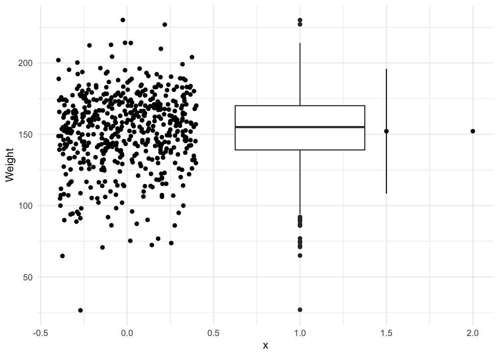

library(ggplot2)
library(dplyr)
Attaching package: 'dplyr'The following objects are masked from 'package:stats':
filter, lagThe following objects are masked from 'package:base':
intersect, setdiff, setequal, unionlibrary(ggplot2)
library(dplyr)
Attaching package: 'dplyr'The following objects are masked from 'package:stats':
filter, lagThe following objects are masked from 'package:base':
intersect, setdiff, setequal, uniondf <- read.csv("https://raw.githubusercontent.com/roualdes/data/refs/heads/master/donkeys.csv")A single sample t-test, appropriate for one numerical variable, on the weight of donkeys.
t.test(df$Weight, conf.level = 0.95, mu = 30)
One Sample t-test
data: df$Weight
t = 107.44, df = 543, p-value < 2.2e-16
alternative hypothesis: true mean is not equal to 30
95 percent confidence interval:
149.8724 154.3372
sample estimates:
mean of x
152.1048 Preparation for a plot to help understand/comprehend the different scales of the standard deviations versus the standard error. The standard deviation estimates the standard deviation of the population of interest. The standard error estimates the standard deviation of the distribution of theoretical means.
dfs <- df %>%
summarise(m = mean(Weight),
s = sd(Weight),
n = n(),
se = s / n,
t = qt(0.95, n - 1),
p_lb = m - t * s, # if pop is roughly normal
p_ub = m + t * s,
m_lb = m - t * se, # pop not necessarily normal
m_ub = m + t * se)Notice the standard error is on a much smaller scale, since it is scaled by the square root of the number of data, namely the sample size \(n\). As the sample size increases, the standard error decreases. As the sample size decreases, the standard error increases.
ggplot(df) +
geom_jitter(aes(x = 0, y = Weight)) +
geom_boxplot(aes(x = 1, y = Weight)) +
geom_point(data = dfs, aes(x = 1.5, y = m)) +
geom_linerange(data = dfs, aes(x = 1.5, ymin = p_lb, ymax = p_ub)) +
geom_point(data = dfs, aes(x = 2, y = m)) +
geom_linerange(data = dfs, aes(x = 2, ymin = m_lb, ymax = m_ub)) +
theme_minimal()
A t-test is less common for tests of proportions, but is nearly equivalent to more traditional methods.
url <- "https://raw.githubusercontent.com/roualdes/data/master/articles.csv"
article <- read.csv(url) # look at data in RStudio
t.test(article$is_data_shared, conf.level = 0.99, mu = 0.5)
One Sample t-test
data: article$is_data_shared
t = -1.2556, df = 396, p-value = 0.21
alternative hypothesis: true mean is not equal to 0.5
99 percent confidence interval:
0.4036094 0.5334183
sample estimates:
mean of x
0.4685139